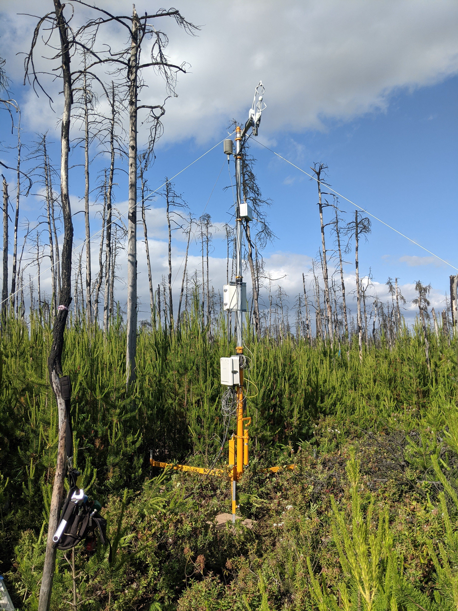

T1 = 9 #deg C
T2 = 6 #deg C
Z1 = 0.05 #m
Z2 = 0.1 #m
k = 1.7 #W m-1 K-1
H_G = -k*(T2-T1)/(Z2-Z1)Lab 5: Energy Balance of Ecosystems
This assignment is worth 15 points.
Objectives
- Define and investigate components of the energy balance equation.
- Know how to convert between latent heat flux (\(H_L\)) and evapotranspiration.
- Work with data from a local EC site.
1 Theory
The surface energy balance is a fundamental budget approach that describes the energy exchange at ecosystem-atmosphere interfaces. It is based on the conservation equation of energy that says that energy can neither be created or destroyed by any ordinary means. The surface energy balance is essential to estimate evaporative water loss, cooling rates, growing conditions, frost damage, and many other important processes in natural and managed ecosystems. The energy balance concept can be expressed as the balance between energy input and energy output plus energy storage.
Components of the Energy Ballance
A simple energy balance equation for a homogenous ecosystem is shown in Equation 1 and it is shown diagrammatically in Figure 1.
\[ R_n = H_L + H_S + H_g + \Delta S \tag{1}\]
Positive values of the net radiation, \(R_n\), mean that the net flow of radiant energy is into the system (i.e.,\(R_n\) is directed towards the surface); negative values mean the converse (i.e., \(R_n\) is directed away from the surface). This convention is used because \(R_n\) is regarded as an input to the system. Positive \(R_n\) indicates a surplus of energy at the surface, which must be balanced by the other terms in Equation 1. Negative \(R_n\) indicates a deficit of energy at the surface, which must be balanced by the other terms in Equation 1.
Positive values of the sensible flux heat density, \(H_S\), the latent heat flux density, \(H_L\), and the soil heat flux density, \(H_G\), mean that energy is flowing out of the system (i.e., away from the surface); negative values mean the opposite (i.e., towards the surface). This is because \(H_S\), \(H_L\) and \(H_G\) are regarded as outputs from the system. Positive values of the energy storage, \(\Delta S\), within the system, mean that the system is accumulating energy; negative values mean that the system is losing energy. Energy may be stored in a number of ways, such as sensible and latent heat in the canopy or as chemical energy (photosynthesis) in the plants.
- Note: energy storage as a result of horizontal energy transport (advection) can occur in heterogeneous systems near near borders/boundaries. This is more difficult to account for and why Equation 1 only works well for homogenous ecosystems.

Net Radiation
Net radiation is either measured directly by a net radiometer which is usually located 1 to 3 meters above a crop (i.e., shorter vegetation) or 10 m above a forest (i.e., taller vegetation). It may be either a net all-wave radiometer with upward- and downward-facing polyethylene domes that transmit shortwave and longwave radiation or a four-way net radiometer consisting of upward- and downward-facing pyranometers and pyrgeometers. Figure 2 shows both of these systems, which you saw during your trip to Totem field in lab 1.
Ground Heat Flux
Ground/Soil heat flux density \(H_G\) is often measured by soil heat flux plates usually placed 2 to 5 cm below the soil surface. Alternatively, it can be estimated from a soil temperature profile using Fourier’s Law, if you know the thermal conductivity (\(k\)) of the soil. Given soil temperatures (\(T\)) at two depths (\(z\)), you can estimate \(H_G\) as:
\[ H_G = -k \frac{T_2 - T_1}{z_2 - z_1} \tag{2}\]
As we discussed in lecture, the value of \(k\) is dependent upon the type of soil and moisture conditions. Generally speaking \(k\) is higher for mineral soils than it is organic soil, and it is higher for wet soils than dry soils. Example 1 shows how you could calculate \(H_g\) for a wet mineral soil (\(k =1.7 \ W m^{-1} K^{-1}\)).
Example 1
With \(T\) = 9\(^{\circ}C\) at 0.05 m and \(T\) = 6\(^{\circ}C\) at 0.1 m; then \(H_G\) would be 102 W m-2 Note, when \(H_S\) is negative, it indicates heat is moving into the soil from the surface.
Surface-Atmosphere Fluxes
The sensible and latent and heat flux density terms in Equation 1 are difficult to determine. As we discussed in lecture, one way to estimate ecosystem-atmosphere fluxes is to use the gradient method. This technique is similar to using Fourier’s Law for calculate soil heat fluxes. For example, if we know the eddy diffusivity (\(K\)) and heat capacity air (\(C_a \approx\) 1200 J m-3 K-1), we can use the gradient method to estimate sensible heat flux (\(H_S\)) from observations of air temperatures (\(T\)) at two heights (\(z\)).
\[ H_s = -K C_a \frac{T_2 - T_1}{z_2 - z_1} \tag{3}\]
Example 2 shows how you could calculate \(H_S\) over a grassland ecosystem (\(K = 0.35 \ m^{2} s^{-1}\)).
Example 2
T1 = 11 #deg C
T2 = 12 #deg C
Z1 = 0.5 #m
Z2 = 4.75 #m
k = 0.35 #m2 s-1
C_a = 1200 #J m-3 K-1
H_S = -k*C_a*(T2-T1)/(Z2-Z1)With \(T\) = 11\(^{\circ}C\) at 0.5 m and \(T\) = 12\(^{\circ}C\) at 4.75 m; then \(H_S\) would be -98.8 W m-2. Note, when \(H_S\) is negative, it indicates sensible heat is moving into the surface from the atmosphere.
Eddy Covariance
Often, we don’t always the prior knowledge of the the coefficients needed to evaluate the gradient method; for example \(K\) varies as a function wind speed, stability, and and site-specific factors (e.g., surface roughness). Instead, we often measure ecosystem-atmosphere fluxes density directly using the eddy covariance (EC) technique. An EC system is shown in Figure 3.
Understanding the full theory behind how EC works is beyond the scope of this course, but in short: a sonic anemometer can track fluctuations in vertical wind speeds over time. Paired with observations of temperature and water vapor fluctuations over time, we can calculate \(H_S\) and \(H_L\). The EC method is useful because it allows us to directly observe components of an ecosystem’s energy balance. However, this technique generally requires a homogeneous ecosystems to yield reasonable results. For example, if sensors are placed near a sharp boundary between two different ecosystems, it can be difficult to determine the actual value for either system, because the observed value is a conflation of fluxes from both ecosystems.
Evaporation Rates
The energy balance is often used to estimate the evaporative water loss from ecosystems such as crops, forests, and water bodies. The latent heat flux density \(H_L\) is the energy used to evaporate water in the stomata (transpiration) and evaporate water in the soil near the soil surface (evaporation from the soil). The sum of transpiration and evaporation from the soil is evapotranspiration.
The latent heat flux density \(H_L\) can be used to calculate the evapotranspiration rate (\(E\)) from an open water surface (e.g., a pond). Equation 4 gives \(E\) in m s-1, though we typically convert it to mm h-1. Here, \(\rho_{H_2O}\) is the density of water (1000 kg m-3) and \(L_v\) is the latent heat of vaporization of water. As you’ve seen in lecture, the latent heat of vaporization is not a constant value; it varies as a function of air temperature. Figure 4 gives the latent heat of vaporization for selected temperatures.
\[ E = \frac{H_L}{L_v*\rho_{H_2O}} \tag{4}\]
Net Ecosystem Productivity
Net ecosystem productivity (NEP) is the primary component of the C balance in most terrestrial ecosystems. It is defined as the difference between ecosystem scale photosynthesis and respiration:
\[ NEP=GPP-ER \tag{5}\]
The sign convention is opposite of what meteorologists often use. Positive (+) indicates accumulation of C in the ecosystem, negative (-) indicates loss of C from the ecosystem. Gross primary productivity (GPP) is the total photosynthetic uptake of carbon dioxide \(CO_2\) by plants in an ecosystem. Ecosystem respiration (ER) is the total respiration of \(CO_2\) by living organisms in an ecosystem.
We cannot directly measure NEP with eddy covariance, but we can approximate it by measuring Net ecosystem exchange (NEE). This is net flux of \(CO_2\) observed between an ecosystem and the atmosphere. It is frequently treated as the inverse of NEP: i.e., \(NEP \approx -NEE\). The sign convention is opposite of NEP because NEE was defined by atmospheric scientists; positive (+) indicates accumulation of C in the atmosphere, negative (-) uptake of C from the atmosphere. At small spatial scales and over short timescales this assumption is reasonable, but strictly speaking, NEE and NEP are not equivalent. Over larger/longer scales they diverge because some \(CO_2\) can be dissolved in ground water and transported into or out of an ecosystem. Transport of \(CO_2\) in ground water cannot be measured via EC methods, so further data is needed to get a full accounting of an ecosystem’s carbon budget.
- If you are curios to learn a bit more, you can find a more detailed explanation here.
Questions
Question 1 [0.25 points]
Multiple Choice: select the correct answer(s) from those listed
Net radiation (\(R_n\)) is typically positive during the _____ and negative at ______ over land surfaces.
- Day, Night
- Winter, Summer
- Night, Day
- Spring, Fall
Question 2 [0.25 points]
Multiple Choice: select the correct answer(s) from those listed
You would typically expect to observe negative ground heat flux (\(H_G\)) during which of the following conditions:
- Calm, clear nights
- Hot, sunny days
- Cold, sunny days
- Not enough information to answer
Question 3 [3 points]
Figure 5, shows a simple diagram of the boundary between a forested ecosystem, and a clear-cut area where all of the trees have been removed. Table 1 gives an observation of net radiation over the forest and clear-cut respectively. Table 2 and Table 3 give examples of soil and air temperature data from the site over the same time period of as the radiation data. Given this information: which, if any, of the components of Equation 1 do you think would be equivalent between the forested ecosystem on the left side of the diagram and the clear-cut area on the right side of the diagram? The red star shown in Figure 5 is a proposed location for an eddy covariance system to study the effects of logging on an latent heat fluxes (\(H_L\)). Would this be a good location to place an EC system? Why or why not?
- Note: You don’t need to evaluate Equation 2 and Equation 3 to answer this question, but it can help. The coefficients needed to evaluate these equations are listed in the captions of Table 2 and Table 3 respectively.
| Height (m) | Clear-cut (W m-2) | Forest (W m-2) |
|---|---|---|
| 10 | 300 | 280 |
| Depth (m) | Clear-cut (C) | Forest (C) |
|---|---|---|
| 0.25 | 3.0 | 2.75 |
| 0.05 | 3.5 | 3.00 |
| Height (m) | Clear-cut (C) | Forest (C) |
|---|---|---|
| 5 | 7.00 | 5.25 |
| 10 | 4.25 | 4.25 |
Question 4 [2 points]
An eddy covariance system was placed over Pond A for six hours. It measured a latent heat flux density of 400 W m-2 over Pond A during the measurement period. Water in the Pond A was 20 \(^{\circ} C\) and air temperatures above the Pond A were also 20 \(^{\circ} C\). Given this information, approximately how many mm of water evaporated from the surface of this pond over the six-hour period? You can round your answer to the nearest tenth mm.
- Hint 1: You need to use Equation 4 here; you can get the value for \(L_v\) from Figure 4,
- Hint 2: Be mindful of your units: Figure 4 gives \(L_v\) in kilojoules, not joules. Make sure to your final answer is in mm, not m.
Question 5 [0.5 points]
Multiple Choice: select the correct answer(s) from those listed
Another eddy covariance system was placed over Pond B for six hours. It measured a latent heat flux density of 400 W m-2 over Pond B during the measurement period. Water in the Pond B was 30 \(^{\circ} C\) and air temperatures above the Pond B were also 30 \(^{\circ} C\). Which pond lost more water vapor to the atmosphere over the 6 hour observation periods?
- Pond A
- Pond B
- Not enough information to know
2 Observations
Burns Bog Seedling Site
In 2016, a forest fire was ignited in the northwester portion of Burns Bog. The fire burned thorough a large portion of the bog’s “Lag Zone”, a transition zone between a forested ecosystem and a wetland ecosystem. Following the fire, lodgepole pine seedlings began to sprout. In the years since the fire, the have formed a dense canopy that is out-competes the mosses, grasses, and shrubs typical of this wetland ecosystem. In summer 2023, and eddy covariance (EC) station, known as the BBS site was established in this area to monitor the energy and carbon balance of this lodgepole pine seedling ecosystem. Table 4 shows average daily cycle of components the energy balance for lodgepole pine in Burns Bog during late summer, 2023.

Table 4: Mean daily cycle of components of the energy balance over a lodgepole pine canopy in Burns Bog, from July 21st, 2023 to August 21st, 2023.
| Hour | R_N | H_S | H_L | H_G |
|---|---|---|---|---|
| 0 | -28.3 | -18.4 | 0.7 | -4.2 |
| 1 | -27.1 | -18.2 | -0.6 | -5.7 |
| 2 | -27.4 | -15.4 | 1.5 | -6.9 |
| 3 | -25.8 | -14.7 | -0.4 | -7.8 |
| 4 | -24.1 | -15.7 | 4.2 | -8.5 |
| 5 | -17.0 | -14.8 | 2.1 | -9.2 |
| 6 | 20.0 | -9.1 | 13.9 | -9.6 |
| 7 | 102.2 | 20.8 | 55.2 | -8.6 |
| Hour | R_N | H_S | H_L | H_G |
|---|---|---|---|---|
| 8 | 211.6 | 71.1 | 107.0 | -5.6 |
| 9 | 338.7 | 126.4 | 159.5 | -1.5 |
| 10 | 426.3 | 161.7 | 203.9 | 2.3 |
| 11 | 478.3 | 186.0 | 230.6 | 5.8 |
| 12 | 537.1 | 214.4 | 254.2 | 8.7 |
| 13 | 491.0 | 203.3 | 241.3 | 11.0 |
| 14 | 458.6 | 181.6 | 226.0 | 13.0 |
| 15 | 382.2 | 147.8 | 202.8 | 14.9 |
| Hour | R_N | H_S | H_L | H_G |
|---|---|---|---|---|
| 16 | 289.4 | 101.4 | 169.1 | 15.9 |
| 17 | 161.2 | 47.5 | 127.7 | 16.4 |
| 18 | 41.8 | -5.1 | 79.0 | 15.0 |
| 19 | -31.1 | -24.3 | 27.1 | 12.6 |
| 20 | -42.7 | -25.0 | 7.3 | 9.2 |
| 21 | -38.8 | -21.2 | 3.9 | 5.0 |
| 22 | -35.4 | -18.6 | 2.2 | 1.1 |
| 23 | -32.4 | -20.0 | -1.6 | -2.0 |
Questions
Question 6 [7 points]
Using the data show in Table 4, plot the mean diurnal course of \(R_n\), \(H_S\), \(H_L\), \(H_G\), and \(\Delta S\) at this site. You can download a .csv file containing these data here. Discuss the patterns you see. How do \(R_n\), \(H_S\), \(H_L\), \(H_G\) vary through the day and how do their magnitudes compare to one-another? How does \(\Delta S\) compare to the other components through out the day and what do you think might be controlling \(\Delta S\)?
Question 7 [2 points]
Figure 7 shows the relationship between hourly NEE at the BBS site and incoming shortwave radiation (\(\downarrow SW\)). How would you describe the relationship between NEE and \(\downarrow SW\)? What phenomena is this graph highlighting? Based on these data, and those in Table 4, during which times of day would you the BBS ecosystem to act as a \(CO_2\) sink (i.e., NEE < 0)?